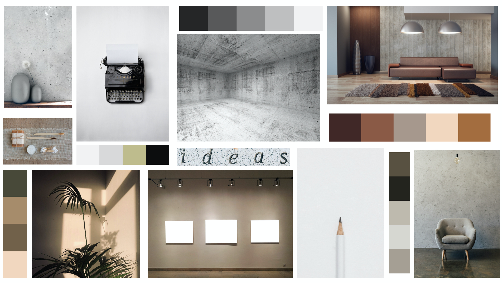

Tema 02
Grundlæggende web
I dette tema skulle jeg opsætte et responsiv website ud fra en tildelte stilart ”minimalism in modern design” websites skulle opsættes i HTML og CSS. Derudover skulle jeg udarbejde et splashbillede samt favicon ved brug af Adobe XD og Photoshop. Temaet forløb sig over 4 uger og her indgik både gruppe -og individuelt arbejde.
- Gruppearbejde - Research og skrivearbejde
- Individuelt - Design og programmering
Processen
Research og skrivearbejde
Her skulle vi i grupper udarbejde en præsentation omkring ”minimalism in modern design” Dette er en stilart som er kendt for sit udtryk less is more og som jeg personligt selv er meget tilhænger af. Derefter skulle vi hver især finde en virksomhed i et minimalistisk design og udarbejde et styletile ud fra. Dette var første gang jeg fik bekendtskab til begrebet styletile og det lærte mig hvordan jeg skulle indsamle et websites farvepallet ved brug af Adobe - Color samt fonte, billeder og elementer.
Det næste step i temaet var udarbejdelse af et moodboard. Et moodboard er et af det første visuelle steps i processen. Det bruges til at indsamle inspiration. Her har fundet inspiration i minimalistisk indretningsdesign, med både kølige og varme neddæmpet farver.
Design og programmering
I design og programmering processen skulle vi starte med at udarbejde et mockup ud fra et tildelt wireframe. Vi måtte selv udvælge billeder, farver og fonte så længe det var tilpasset stilarten.
Et mockup er en skitse over hvordan vi ønsker vores endelig website skal se ud. Her fik jeg prøvet min kræfter af i xd og lærte at opsætte et ligne website. I mit mock up havde jeg valgt at skrive om emnet ”Den minimalistiske bolig” Her har jeg holdt mig til de rolige varme farver, med billeder af minimalistisk indretning. Jeg har siden da ændret i farverne på websitet til en mere kold farve da det harmoneret bedre med mit splashbillede.

Splashbillede og Icon/fav-icon
Websites skulle også indeholde et splashbillede samt et icon/fav-icon. Splashbillede skulle udarbejdes i Photos shop og skulle beskæres så billede passede til et responsiv site. Her var jeg igennem lidt forskellige ideer før jeg fandt frem til det endelig splashbillede. Jeg søgte inspiration på nettet i forhold til splashbillede.
I min proces i forhold til udarbejdelse af icon/fav.icon til website brugte jeg igen nettet og appstore til at søge inspirationen fra boligsider og se på deres valg af ikon. Da jeg havde fået en nogenlunde ide om hvad jeg ønskede gik jeg igang med at skitser en masse forskellige udgaver i hånden. Da jeg var kommet frem til det endelig icon rentegnede jeg det i Adobe XD.
HTML og CSS
Da vi havde designprocessen færdig var vi klar til at kode selve hjemmesiden i HMTL og CSS. Her fik vi udleveret et layoutdiagram som siderne skulle opsættes efter. Da hjemmeside skulle være responsive var det vigtigt at hjemmesiden så optimal ud på de forskellige devices.